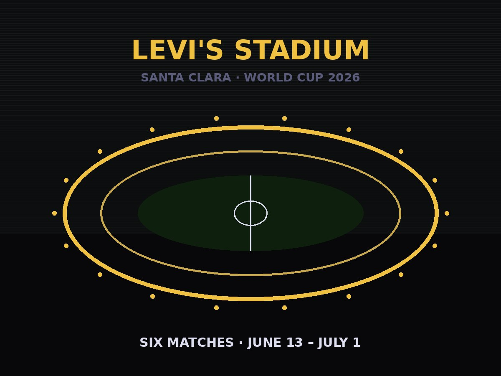
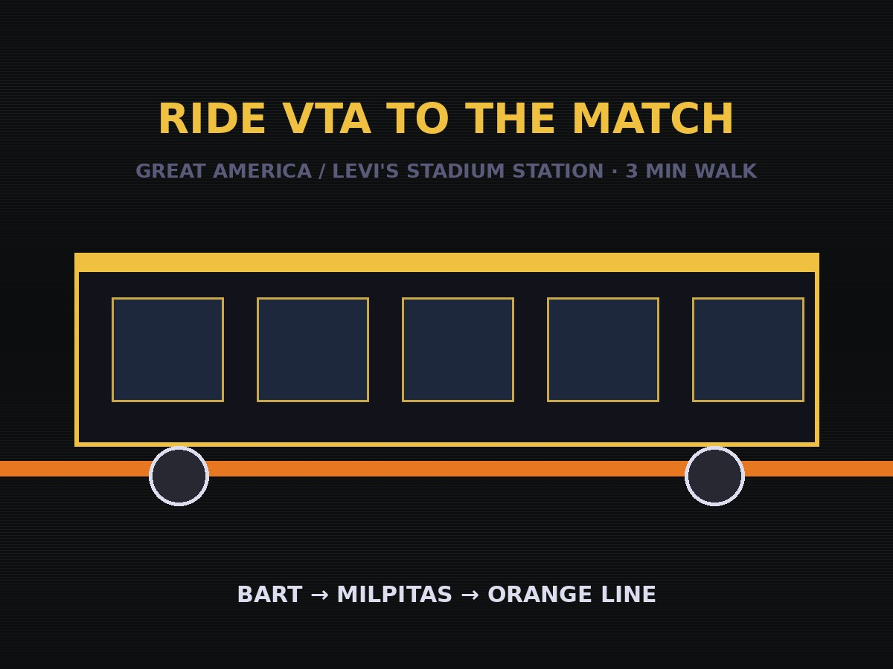
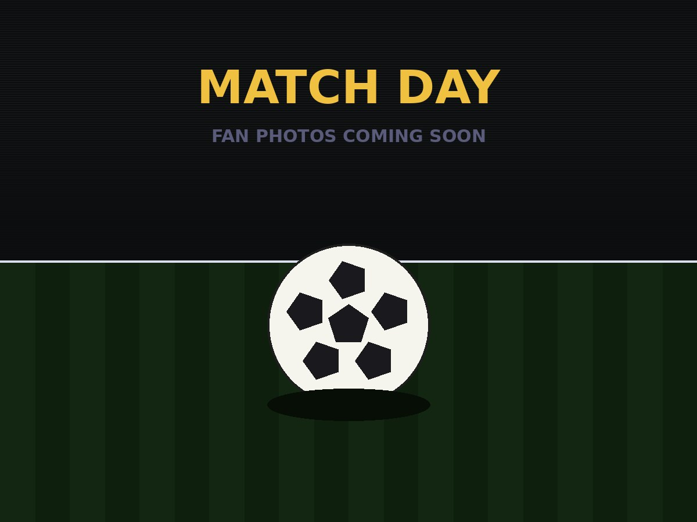
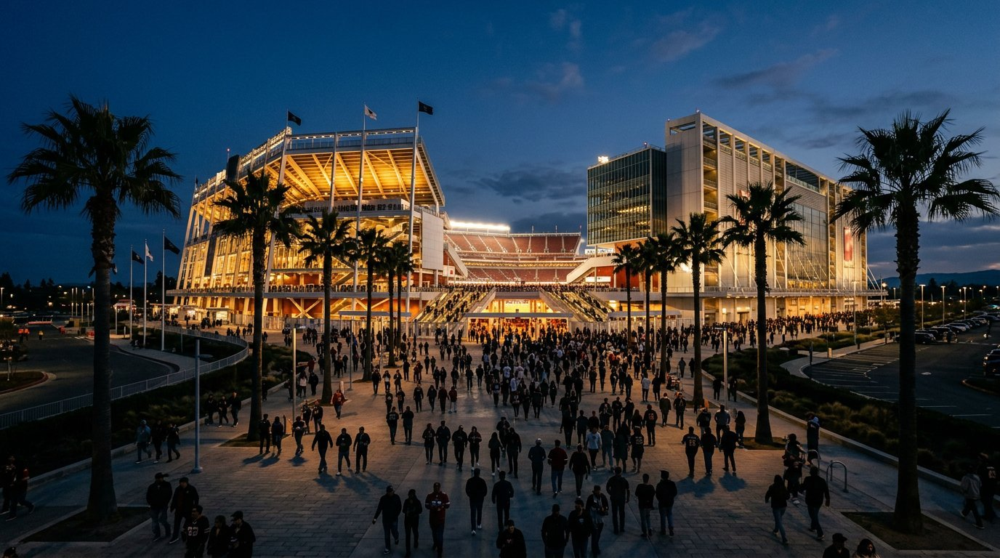
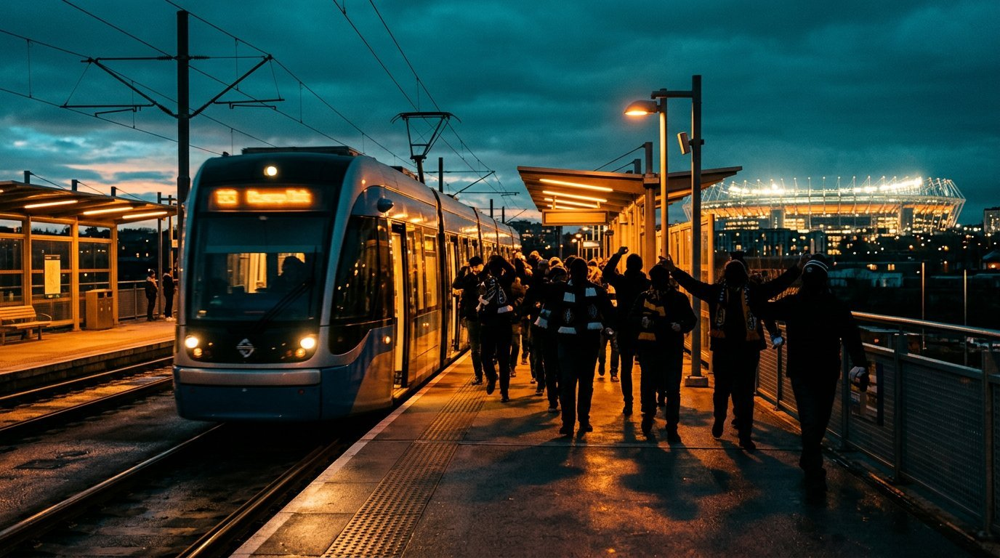

This is an independent fan guide for the six FIFA World Cup 2026 matches at Levi's Stadium in Santa Clara, California. It is not affiliated with FIFA, Levi's Stadium, the San Francisco 49ers, or Allied Universal.
Every photo on this site was taken on actual match days by someone who works there. The transit sign showing Gate A for Caltrain and Gate F for BART was photographed inside the stadium concourse. The parking lot photos show the real walking distance fans face. The seating maps were photographed from the walls. None of this is a press kit rewrite.
I am a licensed security officer working FIFA World Cup 2026 match day shifts at Levi's Stadium through a contracted security firm. I hold an active BSIS Security Guard License and a TWIC Card.
I also run two civic journalism outlets based in San Leandro, California. I have a background in IT support and over a decade of executive administration experience.
I built this site because the information fans needed was scattered, incomplete, or written by people who had never set foot in the stadium.





The Live Hub has real-time match countdowns, the full schedule with live mini-countdowns, an RSS news feed pulling from BBC Sport, ESPN FC, Goal.com, Mercury News, SFGate, and The Athletic, plus group standings for the three groups playing at Levi's Stadium.
The Stadium Guide has the interactive 3D bowl (drag to rotate, tap for section info), transit targets for Caltrain and BART, rideshare pickup zones, parking lot details, road closure tables for all six match days, and a pinch-to-zoom aerial photo of the area with a draggable personal marker.
For corrections, questions, or media inquiries, use the contact form or reach out via the civic journalism outlets linked below.
This site is run independently and is not affiliated with any stadium, team, or tournament organization.
Match schedules are subject to change. Always confirm at fifaworldcup.com before match day. This site is updated by a human, not automated software.